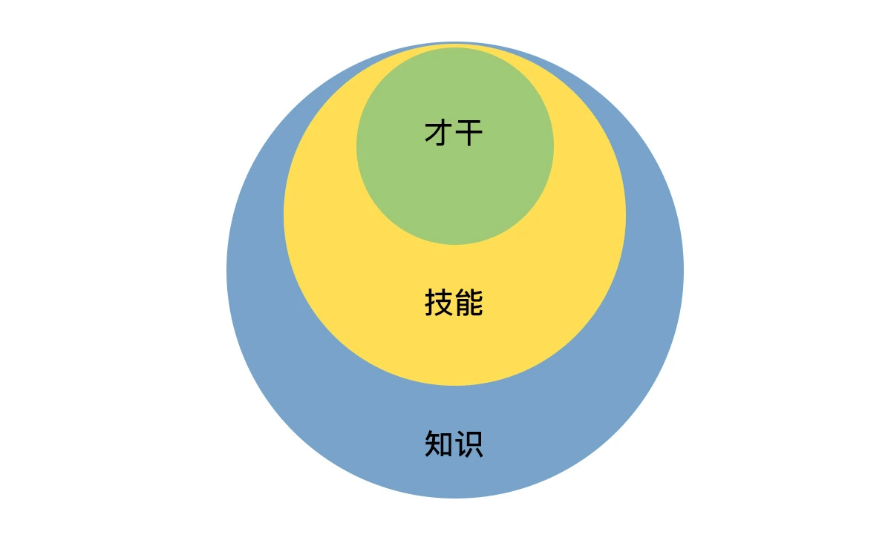

- 00 开篇词 你为什么需要学管理？.md.html
- 01 多年前的那些工程师都去哪了？.md.html
- 02 我要不要做管理呢？内心好纠结！.md.html
- 03 哪些人比较容易走上管理岗位？.md.html
- 04 我要不要转回去做技术呢？.md.html
- 05 作为技术管理者，我如何保持技术判断力？.md.html
- 06 我这样的风格能做管理吗？.md.html
- 07 我能做好管理吗，大家服我吗？.md.html
- 08 管理到底都做哪些事儿？.md.html
- 09 从工程师到管理者，角色都发生了哪些变化？.md.html
- 10 新经理常踩的坑儿有哪些？.md.html
- 11 我刚开始带团队，从哪里着手呢？.md.html
- 12 如何界定我团队是干什么的呢？.md.html
- 13 如何为团队设定合理的目标呢？.md.html
- 14 如何来规划团队的组织结构呢？.md.html
- 15 我都要申请哪些资源呢？.md.html
- 16 团队建设该从哪里入手？.md.html
- 17 如何提升员工的个人能力？.md.html
- 18 如何提升员工的工作意愿和积极性？.md.html
- 19 如何兼顾团队分工的稳定性和灵活性？.md.html
- 20 有什么方法可以有效提升团队凝聚力吗？.md.html
- 21 如何物色和培养核心人才？.md.html
- 22 如何建设团队文化，营造团队氛围？.md.html
- 23 如何和低绩效员工谈绩效？.md.html
- 24 如何让团建活动不再“收效甚微”？.md.html
- 25 多任务并行该如何应对？.md.html
- 26 如何确保项目的有效执行？.md.html
- 27 如何让流程机制得到有效的执行？.md.html
- 28 管理沟通那些事儿.md.html
- 29 沟通经常鸡同鸭讲，说不到一块怎么办？.md.html
- 30 如何掌控自己的情绪，以及如何管理情绪化的员工？.md.html
- 31 我各方面做得都很好，就是做不好向上沟通.md.html
- 32 横向沟通和非职权影响力.md.html
- 33 向下沟通的常见实例解析.md.html
- 34 管理沟通上有哪些常见的坑儿呢？.md.html
- 35 从空降谈管理方法论的积累.md.html
- 36 走出自己的管理之路.md.html
- 捐赠
07 我能做好管理吗，大家服我吗？
在新经理的常见困惑中，“不自信”是普遍存在的一个情况。尤其是当遇到一些挑战或挫折的时候，很容易产生“自我怀疑”，常见的说法有：
“这么点小事都没有处理好，我是不是不适合做管理啊？”
“大家对我的方案有异议，是不是不服我管？毕竟我不是团队里技术最强的。”
“我进公司晚，资历不如大家老，那应该怎么去管这些‘老人’呢？”
“上级对我的期待那么高，我能做好吗？”
归结起来，你会发现，新经理不自信的来源，主要是如下几点：
第一，管理经验不足和能力欠缺。对于很多管理事务不知道该怎么着手，在摸索前行中磕磕绊绊，于是怀疑自己没有能力做好管理。
第二，和团队成员对立比较。由于资历或能力不是团队里最突出的，担心团队里资历老或能力强的团队成员会不服自己，尤其是当这些人提出不同意见的时候，常常会引起新经理的挫败和颓丧。
第三，背负着沉重的包袱。因为担心管理工作做不好会辜负上级的期望，所以带着很大的压力去工作。
既然，我们清楚了引发管理自信不足的源头，那么该如何消除这些根源，提升管理自信呢？
我们先来探讨第一类自信困境：因欠缺管理经验和技能而引起的不自信。
这是每位管理者的必经阶段，其实也是学习所有新事物的必经阶段。你想想你刚接触技术工作的时候，是不是也经常会碰到一些不知所措的问题呢？
只不过不同的是，技术问题往往有比较标准的答案，通过查资料就能解决大部分问题；而管理问题则很少有标准答案，很多经验和技巧是在不断实践的过程中积累起来的，掌握起来不像技术问题那样可以查查资料就快速解决。这也正是管理有挑战的地方。
那么，有没有一些方法可以帮助你快速提升管理能力呢？
答案是有的，你可以从之前的工作经验中，迁移一些能力过来。你可能会说，之前的工作经验以技术为主，有什么能力可以迁移过来呢？为了回答好这个问题，我先介绍一个能力层次模型（见下图），叫“能力三核”，这个模型把能力分为三个层次：知识、技能和才干。

“能力三核”（来自盖洛普）
知识，是指你知道和理解的内容和信息，一般用深度和广度来衡量。由于大部分知识都是基于特定工作场景的，所以这部分能力迁移性不好。也就是说你很难把技术知识直接迁移到管理中来，所以关于管理的知识，是新经理要重点补习和加强的。
技能，是指你能操作和完成的技术，一般用熟练度来衡量。这个层次的能力就有一定的可迁移性了，这里我举几个例子来说明。
比如快速学习的能力，如果你在做技术时积累了快速学习的良好方法和技能，你可以稍加调整运用到学习管理中；
再比如进度控制能力，你在做工程师时，如果对完成一个项目有很好的进度控制能力，就可以把控制进度的方法和要点，运用在管理工作中。
其他容易迁移的能力还有很多，比如沟通表达的逻辑能力、规划工作目标的能力等，都是可以迁移到管理工作中的。所以，你可以专门思考一下，自己有哪些能力可以方便迁移的。
才干，是你长期生活工作所积淀和锤炼出来的模式、特质和品格。这个层次的“能力”是迁移性最强的，换句话说，你想不迁移过来都难。
比如自信，如果你是一个自信满满的人，那么这篇文章对你来说，就权当是开卷有益了；再比如前瞻，如果你是一个前瞻性很强的人，你可能会很习惯性地去规划团队未来的图景，并用未来的图景去激励团队。还有很多其他品质和模式，比如责任、热情、积极、果断、审慎、纪律、和谐、体谅、公正、完美等等，人人都有自己的模式，且每个人各不相同。
那你都有哪些才干和品质呢？一个常用的方法就是：从你之前的“成就事件”中去提取，或者从同事朋友对你的赞美中去归纳。如果你对自我优势探索这个话题感兴趣的话，可以去了解一下“盖洛普优势识别器 2.0”和“VIA 品格优势”等相关理论，它们对于才干和品格都有很系统的介绍。当你有意识地把你的才干和优势运用到管理中时，就会发现很多事情变得轻而易举、得心应手了。
你可以按照上面提到的知识、技能、才干这三个层次去梳理一下自己的能力，虽然很多知识层面的能力很难对管理产生直接帮助，但可以把一些技能和才干迁移过来，帮助你做好管理工作。同时，建立能力的分层意识，也会让你更加迅速而有效地积累管理经验。
上面我们探讨了第一类自信困境，接下来我们来看看第二类，也就是如何面对团队里的老资格员工和高能力员工。
如果你团队有不少资历比你老的员工，或者有一些技术能力比你强的员工，那么我得首先恭喜你。因为这至少说明两个问题：第一，你真的是非常优秀，以至于你能被公司赏识来负责这样一个团队；第二，因为这些老资格和高能力员工的存在，你有机会做出更好的业绩。
你可能还是会疑惑：“他们不听我的，不服我，说什么都是白搭！”对此，我只想对你说：你现在是团队的负责人，需要把自己从和任何团队成员的比较和竞争中抽离，把目光投向远方，去看看你将带出一个什么样的团队，以及在这个过程中，你能为公司、团队和各位团队成员带来什么样的成绩和成长。
当你不把团队成员放在你的对立面的时候，你和他们就没有任何竞争关系，因为所有的比较和竞争都是在同一个层次上才会发生，就好像你可能会和你的同学、同事比财富，但是不会和马云去比较一样。
所以，你要做的，不是和团队成员竞争、比较，也不是比团队每个人都强，而是要考虑如何让大家把自己的才智都发挥出来，去达成一个共同的团队目标。总之，你要做的不是管束和控制大家，而是引导和支持大家。
当你用引导方向和支持帮助的视角去看待你和那些老资格、高能力的员工时，你会因为自己的初心而不再有猜疑和恐惧，因为只有当你真的能够为团队带来更好发展的时候，才能赢得员工发自内心的真正的信赖。
所以，你要做的，就是用大家的力量，去做出更好的成果，而不是单单因为你的职位让大家服气。一旦你做到了，你也就完成了从工程师到管理者的蜕变，成为真正的 leader，自信也就油然而生。
最后，我们来看看第三类自信困境：因为背负了上级太高的期待而担心做不好。
如果说前两类自信来源于自我能力和角色认知的提升，那么第三类自信的增强则来源于外部反馈，尤其是上级。事实上，自信心的建立的确需要外部的正向反馈，这些正向反馈可以极大地提升你的自我认可度。
那么，如何才能得到外部持续的正向反馈呢？
我建议先把反馈通道建立起来，尤其是和上级的沟通通道，可以和上级约好一个例行的沟通机制，定期汇报团队工作，并就已经完成的一些重要工作征求上级的看法和评价。这其中，改进建议固然是很宝贵的，但是你还需要寻求一些肯定性的反馈，比如你可以问：“在你看起来，我有哪一两点做得是不错的吗？”或者“你能感受到我明显有进步的地方吗？”“我希望了解你比较看重什么？”
类似的问题，你也可以和合作伙伴去聊聊，除了请他们提意见，不要忘了问问他们有没有觉得你哪点做得好。当你越来越清楚自己擅长的工作方式是什么的时候，你的自信会和这些正向反馈一起螺旋上升。
这样，引发新经理不自信的三个困境，我们就探讨完了，我把它们简要总结一下：
第一，你可以通过梳理自己可迁移的能力，提升能力自信；
第二，你可以通过把自己从团队成员的对立面抽离，提升角色自信；
第三，你可以通过收集外部积极正向的反馈，提升自我认同。
倘若，此时此刻你正面临一项挑战，来不及通过上面的三种方式来增强信心，我曾经的上级传授给我一句话，非常有效，相信对于此时的你也一定会有帮助，她对我说：“你也许不是那个最强的人，但是你得相信，你是此时此刻做这事儿最合适的人。”
是的，既然你被任命为这个团队的负责人，你就是此次时刻带领这个团队最合适的人。你说呢？
© 2019 - 2023 Liangliang Lee. Powered by gin and hexo-theme-book.